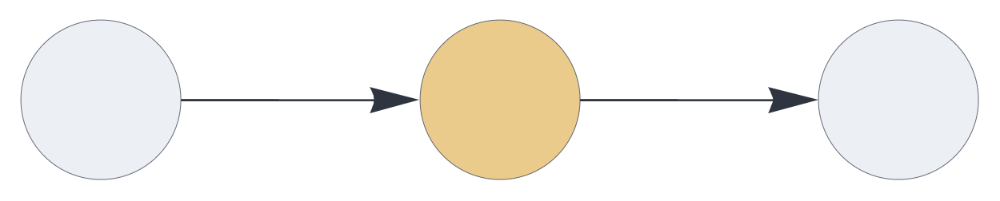
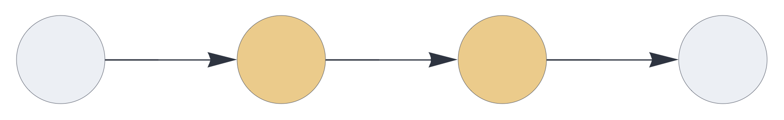
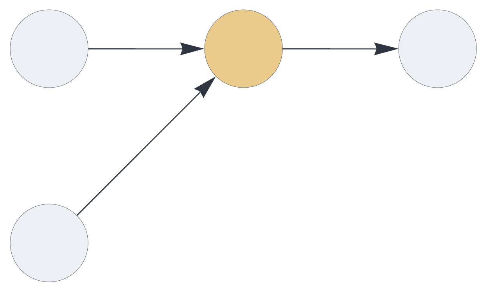
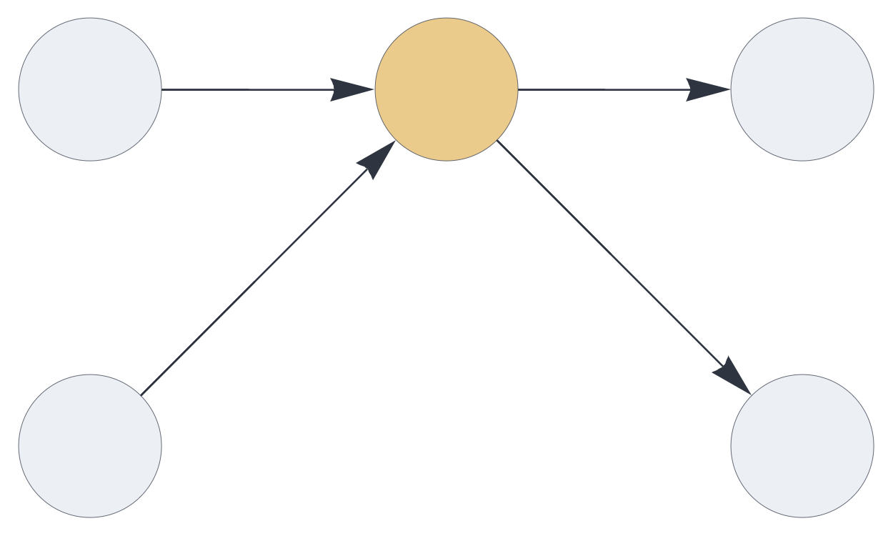
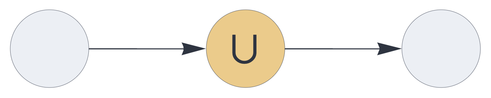
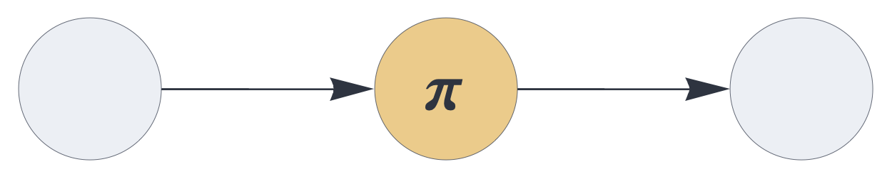

CIRCUIT COMPONENTS
delay

Dataflow component, delaying incoming signals by one execution cycle and optionally integrating signals over multiple timesteps.
Details and properties
- By default, the
delaycomponent delays the inbound signal by one time step. - Supports temporal integration of signals across evaluation cycles, governed by update rule plugins.
- Uses the same set of update rules for temporal integration
as the
temporalcomponent. - Is stateless by default (
replacementupdate rule) and stateful with any other update rule. - Controls sparsity through stochastic subsampling
mechanisms.
- Transparently handles multisets and inhibitory signals.
- Supports multiple input or output blocks.
| Property | Default | Description |
|---|---|---|
send |
required | [integer,...]
representing one or more output slots |
receive |
required | one or more input slots with pathway tags |
plugin |
replacement |
update rule, governing the temporal integration logic |
latch |
false | whether to skip the update if the input is empty |
threshold |
0 | clear input if relative population is below threshold |
rate_limit |
infinite | subsample input if population exceeds the rate limit |
decay |
0 | pre-integration decay (leak rate) |
capacity |
1 | relative population carried over
from previous state (bypassed with default
replacement plugin) |
decimate |
1 | proportional stochastic decimation |
Use standard style options to customize the component’s appearance in circuit schematics.
Stateless delay
The following circuit transports the signal, applying a proportional stochastic decimation by 80 percent. Note that this setup does not delay the signal flow because receiving data from inputs and sending data to outputs is instantaneous.
{ "hyperparameters": {"default": [1000, 10]},
"dataflow": [
{"component": "input", "send": [1]},
{"component": "delay", "send": [11],
"receive": [1], "decimate": 0.8},
{"component": "output", "receive": [11]}
]}
Delay chains
The following setup, chaining two delay nodes,
delays the signal by one timestep:
{ "hyperparameters": {"default": [1000, 10]},
"dataflow": [
{"component": "input", "send": [1]},
{"component": "delay", "send": [11], "receive": [1]},
{"component": "delay", "send": [21], "receive": [11]},
{"component": "output", "receive": [21]}
]}
Block coding
The delay component may receive or send multiple
blocks of data. The total input dimensions and output dimensions
must be the same.
Here the delay node transparently merges two
blocks into a single block that has twice the dimension of the
inputs:
{ "hyperparameters": {"default": [1000, 10], "11": [2000, 20]},
"dataflow": [
{"component": "input", "send": [1]},
{"component": "input", "send": [2]},
{"component": "delay", "send": [11], "receive": [1, 2]},
{"component": "output", "receive": [11]}
]}
In this circuit, two disjoint blocks flow through the
delay node:
{ "hyperparameters": {"default": [1000, 10]},
"dataflow": [
{"component": "input", "send": [1]},
{"component": "input", "send": [2]},
{"component": "delay", "send": [11, 12], "receive": [1, 2]},
{"component": "output", "receive": [11]},
{"component": "output", "receive": [12]}
]}
Pathway merging
In the following circuit, the two incoming blocks of
information are merged. The output dimension is the same as
either input dimension. Note that the list notation in the
receive specification denotes signal merging.
{ "hyperparameters": {"default": [1000, 10]},
"dataflow": [
{"component": "input", "send": [1]},
{"component": "input", "send": [2]},
{"component": "delay", "send": [11], "receive": [[1, 2]], "decimate": 0.8},
{"component": "output", "receive": [11]}
]}
Temporal integration via augmentation
This circuit uses the augmentation plugin,
carrying over twice the default population and applying a
pre-integration stochastic decay of 15 percent. The accumulated
state does not retain the temporal order of signals.
{ "hyperparameters": {"default": [1000, 10]},
"dataflow": [
{"component": "input", "send": [1]},
{"component": "delay", "plugin": "augmentation", "send": [11],
"receive": [1], "capacity": 2, "decay": 0.15},
{"component": "output", "receive": [11]}
]}
Temporal sequence permutation
Using the permutation plugin as
the update rule, a permutation is applied to the previous state
before integration with the current incoming signal. The
accumulated state retains information about the order within the
temporal sequence.
{ "hyperparameters": {"default": [1000, 10]},
"dataflow": [
{"component": "input", "send": [1]},
{"component": "delay", "plugin": "permutation", "send": [11],
"receive": [1], "capacity": 5},
{"component": "output", "receive": [11]}
]}
Source code
def delay(config):
plugin_factory = config.get("plugin", replacement)
if isinstance(plugin_factory, str):
import sys
plugin_factory = getattr(
sys.modules[__name__],
plugin_factory,
replacement)
plugin = plugin_factory(config)
if plugin_factory is replacement:
plugin.pop("label", None)
dims1 = [b[0] for b in config.get("receive_blocks", [])]
dims2 = [b[0] for b in config.get("send_blocks", [])]
pop = sum(b[1] for b in config.get("receive_blocks", []))
threshold_factor = config.get("threshold", 0.0)
absthreshold = round(threshold_factor * pop)
rate_limit_factor = config.get("rate_limit", float('inf'))
absratelimit = round(
rate_limit_factor *
pop) if rate_limit_factor != float('inf') else float('inf')
decay = config.get("decay", 0.0)
capacity_factor = config.get("capacity", 1.0)
abscapacity = round(capacity_factor * pop)
decimation = config.get("decimate", 1.0)
latch = config.get("latch", False)
Xstate = []
def f(*blocks):
nonlocal Xstate
X = multiset_block_join(list(blocks), dims1)
# Enforce minimum population
if len(X) < absthreshold:
X = []
if len(X) > absratelimit:
X = sorted(
rng.choice(
X,
size=absratelimit,
replace=False).tolist())
if decay > 0.0:
keep_size = math.floor((1.0 - decay) * len(Xstate))
Xstate = sorted(
rng.choice(
Xstate,
size=keep_size,
replace=False).tolist())
if len(Xstate) > abscapacity:
Xstate = sorted(
rng.choice(
Xstate,
size=abscapacity,
replace=False).tolist())
# Temporal integration via update rules
if not (latch and len(X) == 0):
Xstate = plugin["updaterule"](X, Xstate)
# Proportional multiset subsampling applied to output
Xdec = Xstate
if decimation < 1.0:
sample_size = math.floor(decimation * len(Xdec))
Xdec = sorted(
rng.choice(
Xdec,
size=sample_size,
replace=False).tolist())
return tuple(multiset_block_split(Xdec, dims2))
result = dict(plugin)
result.update({
"function": f,
"checks": ["arginp", "argout", "totaldim"],
"fill": 13
})
return result